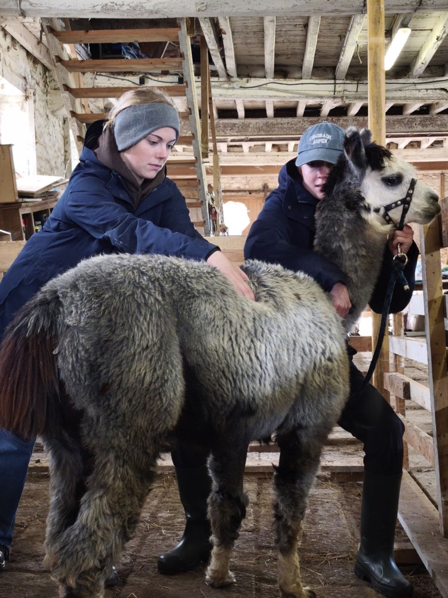
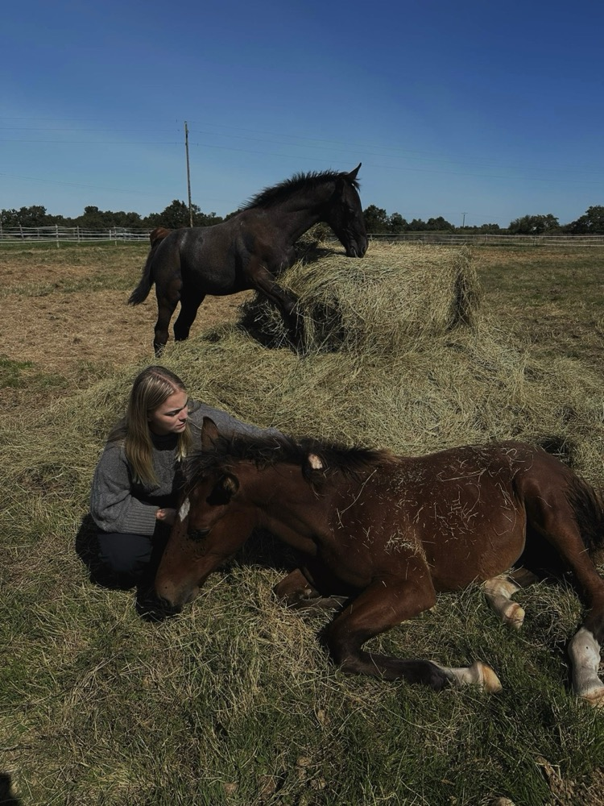
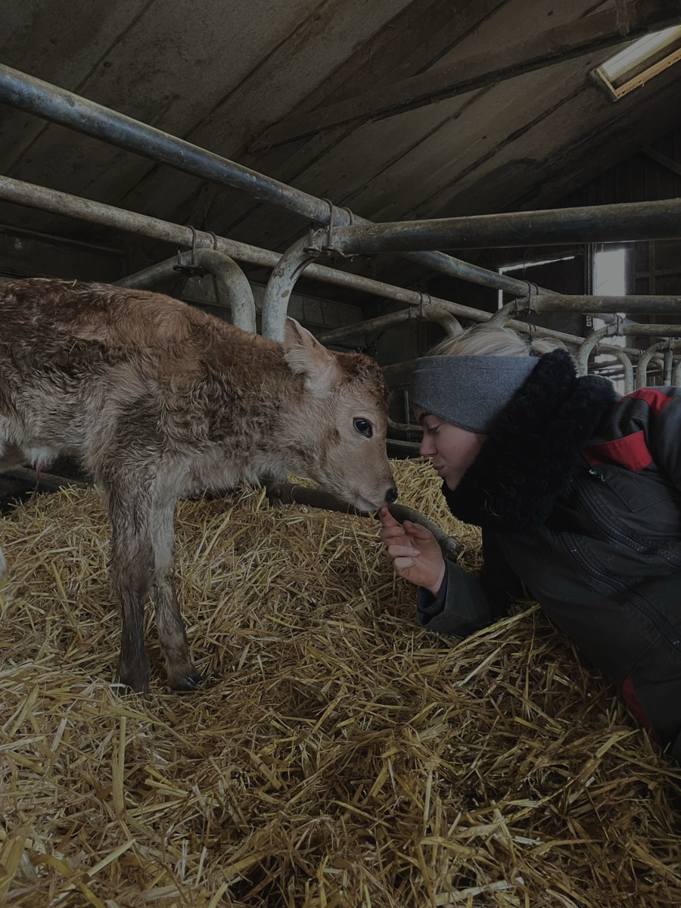
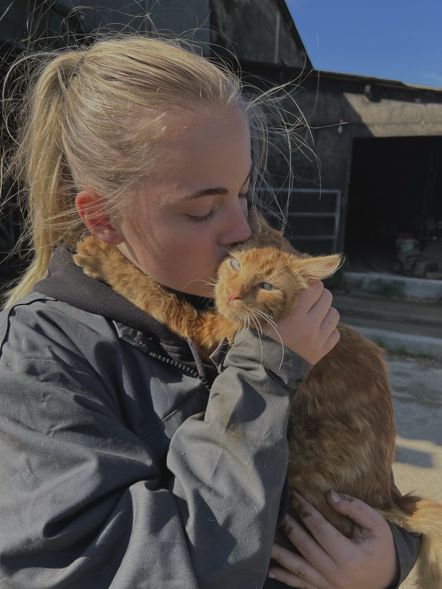

Des soins ostéopathiques adaptés à chaque animal
Équidés, bovins, chiens, chats ou NAC : chaque espèce a sa propre morphologie, son propre rythme et sa propre sensibilité. Découvrez comment l'ostéopathie s'adapte à votre compagnon.


Équidés
Consultation en écurie, en centre équestre ou en pension. Le travail ostéopathique accompagne la posture, la récupération sportive et le confort locomoteur du cheval et du poney, à tout âge et à tout niveau d'activité.
Quand consulter ?
- Résistance ou changement de comportement sous la selle
- Asymétrie musculaire ou difficulté à prendre un galop
- Baisse de performance sans cause apparente
- Suite à une chute, un transport ou une compétition
- Sensibilité au pansage, au sellage ou dans le dos

Bovins
Interventions en élevage, sur vaches, veaux et taurillons. L'accompagnement vise à améliorer le confort locomoteur et à soutenir les animaux les plus sensibles au stress, dans le respect du rythme de l'élevage.
Quand consulter ?
- Difficulté à se lever ou à se coucher
- Boiterie ou démarche raide persistante
- Suites d'un vêlage difficile
- Baisse de mobilité sans cause vétérinaire identifiée

Chiens & chats
Séances à domicile, dans le calme et le confort de votre intérieur. Le suivi porte sur les douleurs articulaires, les tensions musculaires et les troubles de la locomotion, à tout âge de la vie de l'animal.
Quand consulter ?
- Réticence à sauter, monter les escaliers ou se déplacer
- Boiterie intermittente ou raideur au réveil
- Léchage répété d'une même zone
- Changement de comportement (irritabilité, retrait)
- Suite à une chute, un choc ou une intervention chirurgicale
NAC
Accompagnement doux pour lapins, furets, rongeurs et petits mammifères. Les techniques sont adaptées à chaque morphologie et à la grande sensibilité de ces animaux, avec une approche particulièrement légère.
Quand consulter ?
- Diminution de la mobilité ou de l'activité
- Difficulté à se déplacer dans la cage ou le clapier
- Changement dans la toilette ou l'appétit
- Posture inhabituelle ou repli sur soi